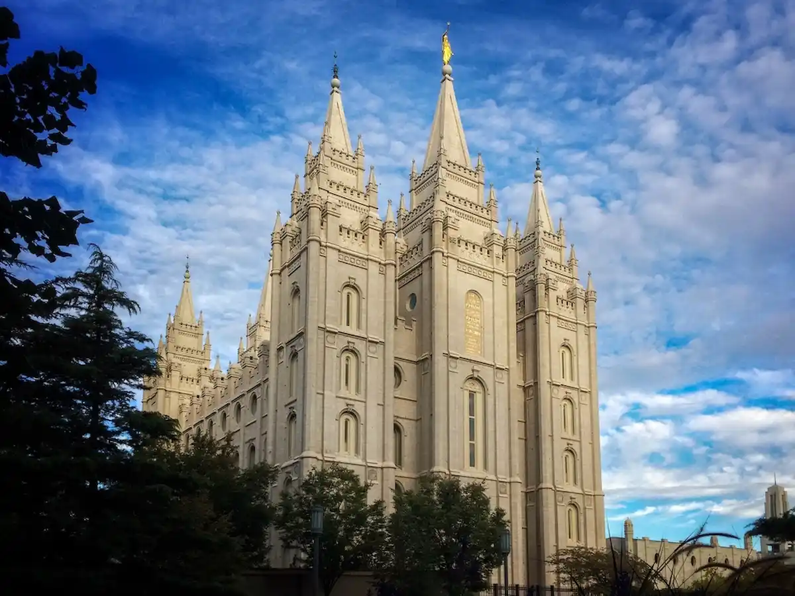
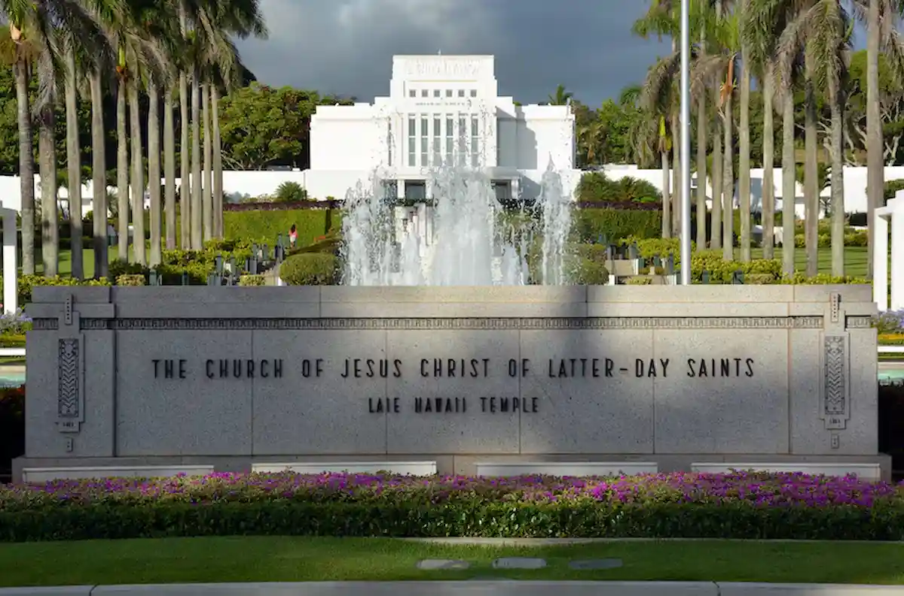
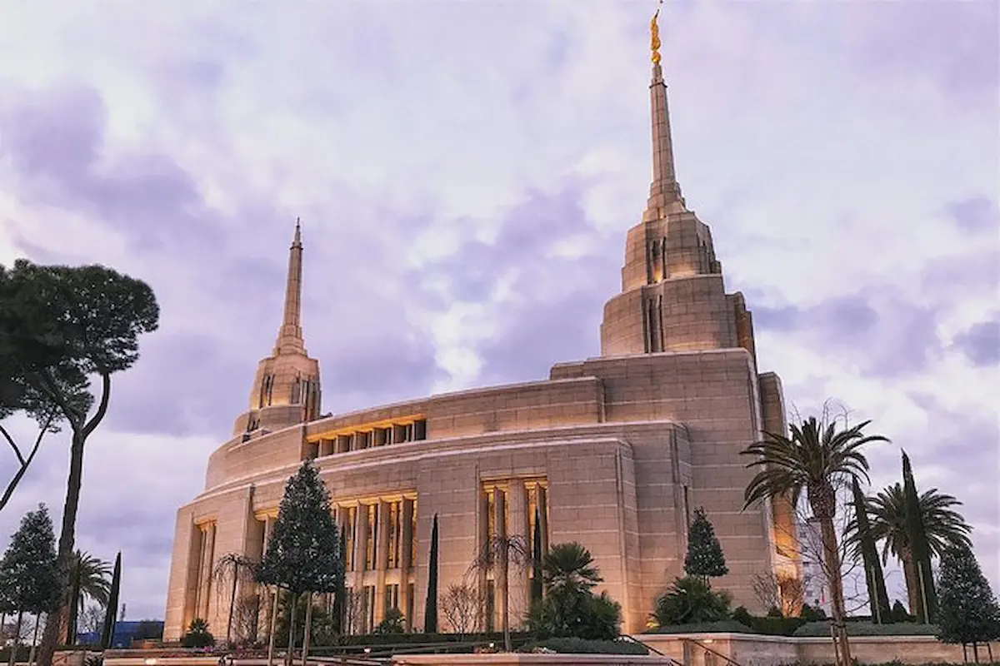
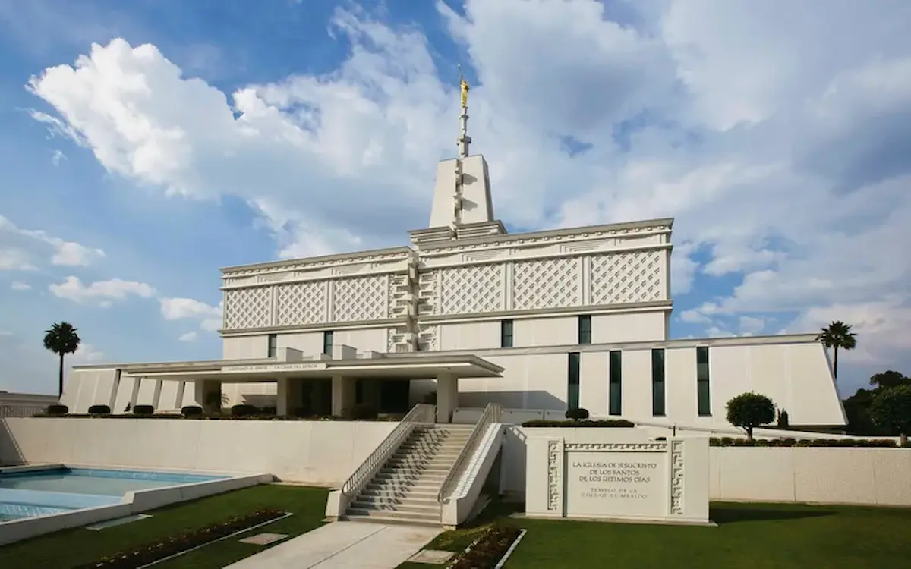
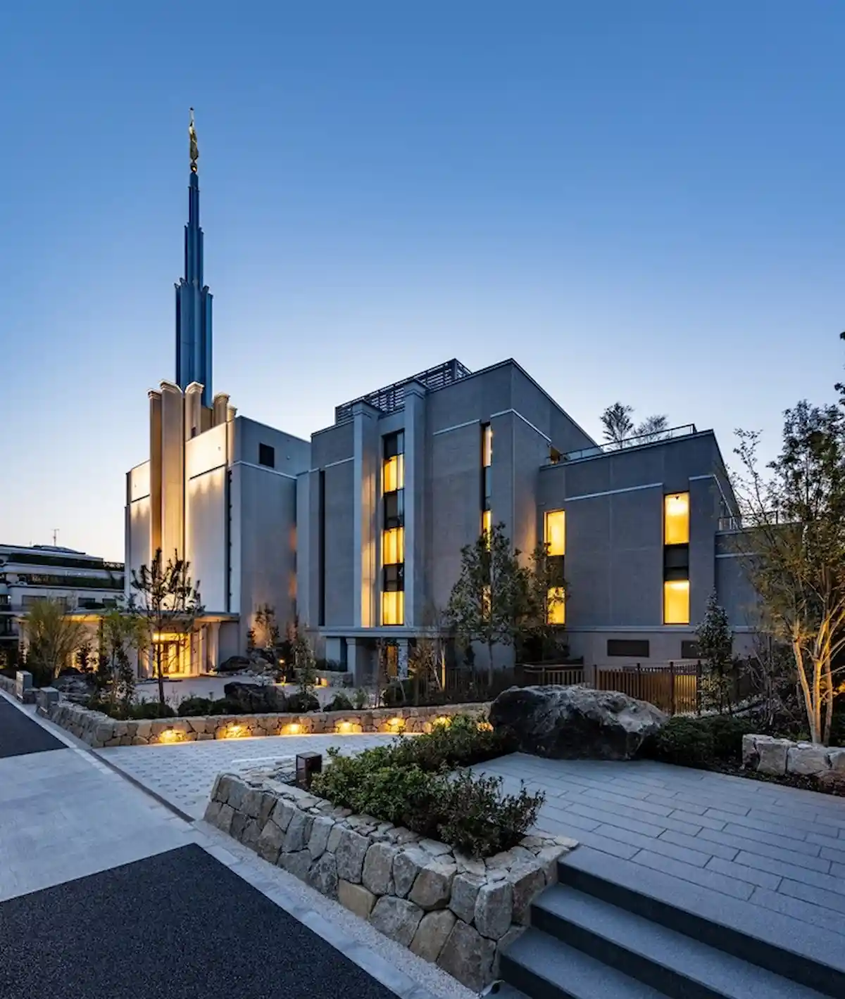
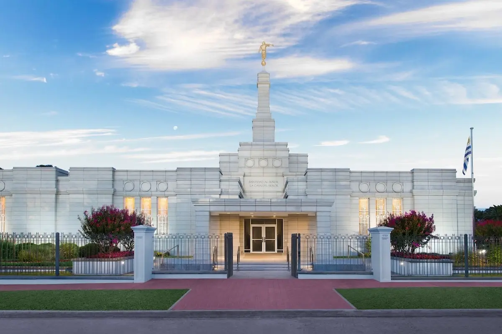

Temple Album
☰
Home
Old
New
Large
Small
Temple Gallery

Salt Lake Temple

Laie Hawaii Temple
Nauvoo Temple

Rome Italy Temple

Mexico City Temple

Tokyo Japan Temple
London England Temple
Bern Switzerland Temple

Montevideo Uruguay Temple